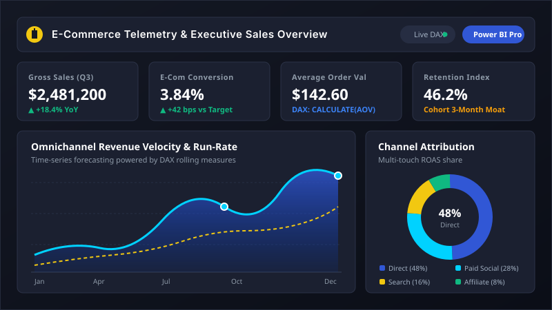

PROJECT 01 · Power BI | DAX
Data Visualisation
Analytics
E-Commerce Sales Analytics Dashboard — Power BI
An analytics project focused on presenting e-commerce sales data through an interactive Power BI dashboard. It showcases data visualisation and analytical reporting to make sales information easier to explore and interpret.
Power BI
DAX Measures
Data Visualisation